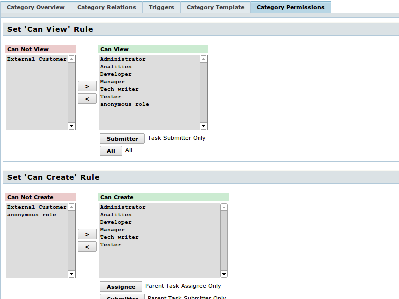

|
<< Click to Display Table of Contents >> Navigation: DocumentationEng > Administrator's Guide > How to define and configure the categories of tasks? > How to configure user rules for tasks with a particular category |
You can configure the rules, as per which the users with particular roles can or can’t create, edit and delete the tasks with a particular category, and also be their assignees. So as to set the access control rules for categories go to the required category through menu and select the tab “Category Permissions”.
Settings for each of the rules are given in the form of pair of roles’ lists. Users with roles from the left list can’t perform the particular operations, but users from the right one can do this.

When a category is being created, permission rules for all the roles, to which the creator of category has access, are specified automatically.
Settings of rules must not contradict each other. For example, it is not possible to give permission for creating, editing and deleting the task, and not allow viewing. Similarly, you must permit the editing of task, if you allow its creation.
Particular attention needs to be given to the rules for viewing of tasks with a particular category. Viewing must be prohibited only in exceptional cases, particularly — for task-containers, which contain sub-tasks. If the user can’t view tasks of a particular category, he will also not have access to sub-tasks irrespective of settings.
For each role from the list of permitted ones, you can also specify particular modifiers. Thus, e.g., you can give permission for viewing the tasks of a particular category to not all the managers, but to the Manager, who is the submitter of task. Or you can permit the editing of task only to the person assigned for the task with the role Developer. For the purpose of using the modifier, select the required role (or roles) from the list and press the button modifier. You can use two modifiers (Submitter and Assignee), if they are available. Pair of modifiers work as perOR.
For each of the roles, there are features for usage of these modifiers, which must be highlighted additionally.
Only modifier Submitter is permitted for this rule. In the earlier versions of TrackStudio, it was allowed to use the modifier Assignee also, but thereafter such feature was removed, as it led to collisions while executing triggers: if you passed on the task to some other user through execution of operation, and some trigger is attached to it, this trigger couldn’t be executed by your name.
Though, considering that in the newer versions of TrackStudio submitter of task can be changed with the help of triggers, the system can still break down in these limitations.
As the task doesn’t exist before its creation, in this case the modifiers Submitter and Assignee are used for higher task. This way, for instance, give the permission to fill the list of requirements only to the assignee for particular component.
Everything is quite simple for these rules: Submitter — is the author of task, and Assignee — is the person responsible for it.
This rule is a bit complex. Here Submitter and Assignee once again belong to the higher and not the active task. This rule is applicable in the process of creation of task. Simply said, it determines the list of users, which will be displayed in the field of selection of assignee while creating the task. In the remaining stages, those rules are applicable which are specified for the workflow, to which the category belongs.